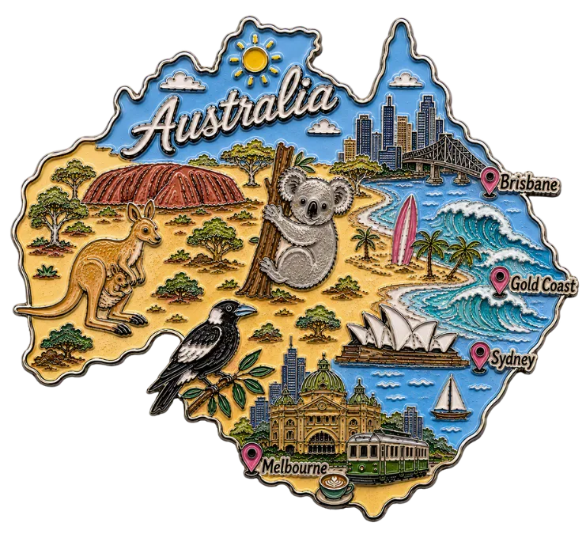
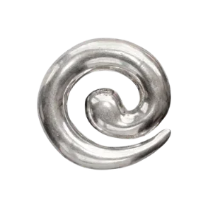

À MESA
COMER É UM ATO POLÍTICO. COMIDA DE VERDADE, NO CAMPO E NA CIDADE,
PELA SOBERANIA ALIMENTAR.
PEDIDO: ******000
MESA: DIVIDIDA COM QUEM AMA
PORÇÃO: EQUILIBRADA
REGRA: SER FELIZ
GUARDE ESTA VIA PARA SEUS REGISTROS
@ALINEANGELA